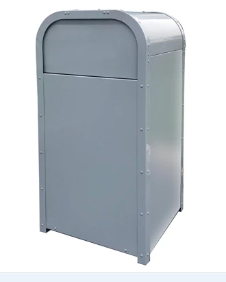
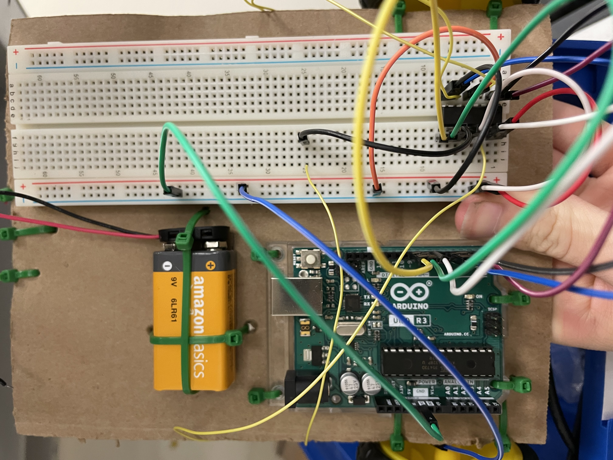

8/21-8/24 "Week 1" This is my first journal entry, we worked on a lot this week. First we started off by starting our website so you can see it.
This was major in my books because this was the first time ive coded since 6th grade. We also learned the safey rules and engineering
process which we have to study for next week's quiz. We also did our first challege which included cut pvc pipes and a marble. My group
came up with the idea of if we had it higher and slowed it down in the process it would get into the bucket. Which worked 4 times
3 out of the 4 times we missed the bucket but as the other half of the class went inside, our group stayed and almost made it in, a
finger or two got into the way of the bucket unfortunetly. :(
Week 2
8/28-8/31 "week 2" This is my second journal entry, we didnt work on machines a lot but we did learn about mechanical engineering and
how to tinkercad!!! We learned that mechaical engineering is the oldest and broadest engineering there is and there is subcatagories that
go with it. It's pretty intresting to know that this one engineering field can be so massively spread out. We also learned how to tinker cad and
while I have tinkered a little in this website once, it was still a fun experice. For my second project on this website I made an oven
and it was pretty cool if I do say so myself.
Week 3
9/5-9/8 "week 3" This is my third journal entry, we did a lot of coding this week. We worked on our Rube Goldberg experiment where
we are rolling down a baseball to hit a car that will make the pully lift up and hit the ballon. While we finished our cad we started
our contrustion on the build. Keenan and I worked on the math and measurements of the build and our other group members started to
cut the carboard. We finished the stilts for the first platform that will hold the baseball. Im very excited to start the contrustion
of our machine.
Week 4
9/11-9/13 "week 4" This is my fourth journal entry, we finished our Rube Goldberg experiment. Its small but mighty!!!
throughout the building process we tested every chance we got. With the limited resources(the car and the baseball) that everyone
wanted at the same time to test there experiments. After all the failed and successful attempts of testing it we were unable to
finish the experiment this week.
Week 5
9/18-9/21 "week 5" This is my fifth journal entry, this week we finished our Rube Goldburg experiment and got it to FINALLY work.
It was a long and stressful monday but we got it complete. On Tuesday we completed one challege a water boat that for mine only lasted
45 seconds and started and finished on Thurday an E project where we had to be extremely specific and write down every measurement
for each side. After we completed and judged the E's we started to learn computuer engineering. Which entails electrical and
computer engineering. YAYYA :)
Week 6
9/25-9/28 "week 6" This is my sixth journal entry, this week we finished our E project which did not go to plan for some people.
But it was still fun, then on wensday we disected a computer which was very fun. Seeing where the different components connect to
make a machine actually work is cool. You could see the motherboard up close and see the transistors and Cpu/Gpu. It was a very fun
week this week with all the wires and rebuilding the computer again. It has inspired me to possibly building my own computer one day.
Week 7
10/1-10/6 "week 7" This is my seveth journal entry, this week we learned about a new engineering branch called bioengineering.
This branch of engineering is about prostetics and how to manipulate the different tissues in our bodys with machines.
This was very intresting to me because I enjoy seeing how different parts of the body function together and how one machine can be
used to help a person gain a little of that ablity back. We also did a lab where we created a claw just like robotic hands and was
actually functional. My partner and I decided on a hand that had rope attached to "fingertips" that created almost a grip like the
Gecko claw so that it could optain the waterbottle with efficiency.
Week 8
10/9-10/12 "week 8" This is my eighth journal entry, this week we learned about aerospace engineering. Its a branch of engineering
that focuses on making rockets. I learned about the 2 different branches in Aerospace engineering which is aeronautical engineering which
is about airplanes and staying in earths orbit while Astronautical Engineering is about satalites and space ships. Also its easier
to get into bigger companies. You also get a lot of money when you go into this field. We also made cad desgins of a spaceships.
I took the height of the soda can and added a couple more for the head and then added diagnal fins so it will make it turn faster.
Week 9
10/16-10/20 "week 9" This is my ninth journal entry, this week we tested and built our plane. My partner and I built a aerodynamic plane
which we thought would be perfect. While neither of us knew what we were doing we thought of a cool desgin and went with that. Unfortnatly,
i got the head cold and was unable to be there when they tested but i got videos. Ours did great on the desgin factor not so much going far.
If we had more time i would fill the bottle more up with water and do a lighter material to build out of.
Week 10
10/23-10/25 "week 1o" This is my tenth journal entry, this week we learned about evnironmenal engineering. They filter water
throught pipes so we can drink and bath in it. We also did an experiment with it. Dixon and I did a filter which intaled cotton balls
at the bottom, sand ontop of that, small pebbles and large rocks. It filter pretty nicely if I do say so myself. It looked like greentea
but I asked another group which reminded me that filters needed to be cleaned. Next time i will clean out the filter so it comes out
cleaner.
Week 11
10/30-11/3 "week 11" This is my eveth journal, we learned about electrial engineering. In electrial engineering there are many
factors like a diode. A diode has to sides an anode which is the longer and postitive side and the cathode is the shorter side and
negative side. We also learned about the different ohms laws equations they involve voltage, current and restains. And with that
when you have lower voltage you also have lower resitance when means it is directly proportional.
Week 12
11/6-11/9 "week 12" This is my ninth journal, we learned about circuits and breadboards. We built circuits that turned on an LED
light if we did it correctly. There was many mess ups that I learned to correct with a little bit of help. I learned that you have
to ground the circuits with negative first and postive last. I also learned that even the little bit of a mistake will mess up
the hole circuit and you have to check your cathodes and annodes to make sure that you dont mess them up.
Week 13
11/13-11/16 "week 13" This is my tenth journal, we learned about busniess engineering. Busniess engineering is a hybrid of
busniess manigment and being a techinal expert. For our project we are making a shark tank my groups idea is to use a trash can
and when you recycle you get points and once you get to a certain amount of points you can earn prizes. (toys or gift cards). We
also watched some shark tank interviews which included scrub daddy. Those slogans helped us brain storm some ideas for it.
Week 14
11/27-11/30 "week 14" This is my elveth journal, we created concepts for our busniesses and my group decided on a trash can that
can give rewards if you get a certain amount of points. I figured out the amount a metal trash can would be and figured out how much
some of the rewards would be and came up with 350 for the total amount for everything. while we were doing persentaions i enjoyed the
pitch of the college app. It would help a tone of seniors and improve application rates. It would also help seniors be more organized,
because college board is nice but its much more handry to have it on a more formated app.

Week 15
12/11-1/10 "week 15" This is my twelf journal, these last couple of weeks we worked on building our bridges and testing them. We did pretty long for our second
bridge, unfortunetly the weight made us lose a high score but it held more water. Brookln and I did most of the build because the two boys were busy or they were sick.
I really enjoyed this project and i learned that putting a bunch of spaggtii together is lighter and will hold more water suprising.
semester 2 Week 1
1/8-1/12 "week 16" This is my thirdtenth journal, we learned about chemical engineering. An engineering that creates drugs for people to use to help them get better and they also heavily know
the elements very well. For example they make lotions for our hands with body washes, shampoos and conditioners so they are perfect for humans to use. For the experiment we did a weird slime, that
was really difficult to make but fun in the end. When you moved the formual around it was hard but once you picked it up it was liquid. And all it was baking soda and water.
Semester 2 week 2
1/15-1/19 "week semester 2 week 2" This is my fourtenth journal, this week we researched and made a proposial for arinios. In this
project we are making possibly full atonimous car that will drive in the cafitera. We have a lot to work on but we did our reasearch
and wrote many paragraohs. I am very excited about this up coming project and hoping to expand my knownlege on wiring. I am also
excited on coding which i am most excited about because ive been coding since i was in 2nd grade.
Semester 2 week 3
1/22-1/27 "week semester 2 week 3" This is my fifthteenth journal, this week we tinkercaded our car, that was a lot of work,
figuring out our dimensions and size of the car. We also started to wire our breadboard and wheels, we learned that their is an issue
with the code that wouldt let the left wheel. We also figured out that having a ball barring will even out the weight of the wheels.
Next week we hope to start cutting out the cardboard and figure out the issue. We also figured out the issue while writing this paragraph.
Semester 2 week 4
1/29-2/2 "week semester 2 week 4" This is my sixth journal, this week we coded and wired our robot. One of our major road blocks
in the robot was the battery, because of the voltage it requires more volts to run 2 motors on a motherboard then one. We also got our code
to work and do donuts on the floor. Keenan and I worked on the code while Levon worked on wiring. We also cut the body for our robot which was
exciting. We hope to start to mounting the components of our robot on the body.

Semester 2 week 5
2/5-2/8 "week semester 2 week 5" This is my seveth journal, this week we tinkered with the ultrasonic sensor, we have got it
so that within 100cm the sensor will turn left and once you get more than 100cm then it will go straight. Some troubles we have been
incountering is wiring and placing the second bread board on our robot. Its been a little difficult wiring it so that the bread board
would be on top. Another issue is that the amount of voltage going into both the ardino and sensor, the ardino wheels need 9 volts while
the sensor needs 5. So in that case we cant go automomous without a laptop.
Semester 2 week 6
2/5-2/8 "week semester 2 week 6" This is my eighth journal, these last 2 weeks have been exciting. We have been wrapping up
testing which has been heckic the sensor has beeen giving us a run for our money. After a couple of articles and reaseach we were
able to finally able to get it to work. So after 100cm it turn another direction. We are ready for testing and ready to win.
Semester 2 week 7
2/19-2/22"week semester 2 week 7" This is my nineteen journal, testing went suprising well, we were able to test out the code and
the sensor was fun to play around with and fun to see in action regards to seeing it with other veichels. While i expected testing to go
good it had a little hiccups, for example the wire that connected the robot to the computer moved the robot without it being fully being by
its self like we hoped. The car went around in circles and went to the front of the cafitera to the end of the cafitera. If we had more
time then we would have hoped for a 5volt battery and maybe a bigger body to add the second breadboard because he 5 volt battery would have
allowed the robot to go fully atonimous and use the sensor as a way to guide itself and a bigger body to have extra room for the breadboard
because it was awkward to stack both on top of each other.
Semester 2 week 8
2/19-2/22"week semester 2 week 8" This is my twentyth journal, for our egg drop desgin we created a way so that the impact will
be in the lower box instead of the egg. We reasearch images of past egg drop desgins and used physics to decied our desgin. Currently
we have built that lower desgin and started to puncher the holes for the string, we believe that string is stronger than tape. For the
doors and wheels challege we won!! We made an agrument that anything that is on an axis and that allowes access should be classified as a
door. With Keenan and another classmate we searched the 7 thousand building and found that windows and lockers and alot of other things
work with our definition.


.png)